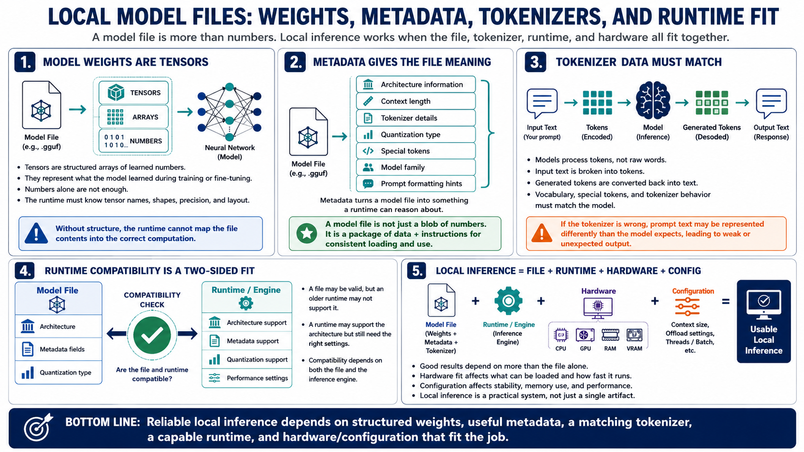

Local Model File Concepts
Connecting to LMS... Progress: in progress

Narration
A local model file contains model weights, usually stored as tensors. Tensors are structured arrays of numbers that represent what the model learned during training or fine-tuning. Those numbers are not useful in isolation. The runtime has to know the model architecture, tensor names, tensor shapes, precision, and layout so it can map the file contents into the correct computation.
Metadata turns a model file into something a runtime can reason about. It can describe architecture information, context length, tokenizer details, quantization type, special tokens, model family, and sometimes prompt formatting hints. This is why a model file is more than a single blob of numbers. It is a package of data and instructions that helps the runtime load and use the model consistently.
Tokenizer data is especially important because models do not process text as raw words. Text is broken into tokens, and generated tokens are converted back into text. The vocabulary, special tokens, and tokenizer behavior need to match what the model expects. If the tokenizer is wrong, prompt text may be represented differently than the model was trained to understand, which can lead to weak or unexpected output.
Runtime compatibility depends on both the file and the inference engine. A GGUF file may be valid, but an older runtime might not support a newer architecture, metadata field, or quantization type. Likewise, a runtime may support the architecture but require specific settings to perform well. Local inference is a combination of model file, runtime capability, hardware fit, and configuration.